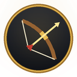
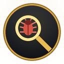
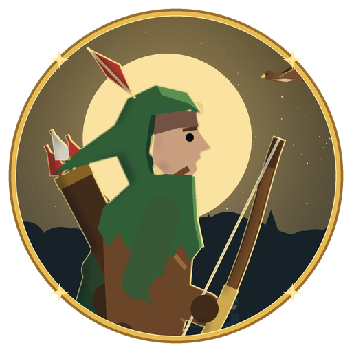

Herald is Open Vanilla's self-learning ranger. He plays on the realms that allow him, learns better routes and combat tactics from the data of every run, and finds the bugs, broken quests and stuck spots before you do. He reports what he finds; the team reviews the fixes and ships them.
A combat simulator and a route planner, fed with the realm's own quest and creature data, pick his route and his kite timing. Every real run is logged and compared with that plan, and the gaps tune the next plan.
Retuning himself after every run, with no person in the loop Coming

He takes quests, walks to them, fights with a kite cycle, loots, rests, comes back from deaths and hands quests in, with nobody at the keys. Today that's a Human Hunter in Northshire, levels 1 to 5. v1
All of Elwynn, more classes, the whole road to 60 Coming

Quest givers that aren't where they should be, steps that time out, spots where he gets stuck, places where the server snaps him back, shots refused for range or line of sight, and fights that go much worse than they should. Every night he also signs in with a real browser and checks graphics, art and frame rate.
His nightly report goes to the team's Discord. Orion sorts it into the bug queue, and a person reviews every fix before it ships. Herald never changes the game himself.

Every update goes to the staging realm first, and Herald Lite plays it there: he signs in, buys from a vendor, checks weapon skills and trades between two characters. Only when that passes does the live realm get the same update. On the Open Vanilla Discord, Herald is also the friendly face at the gate: he asks the rules question, welcomes new adventurers in Arrivals and keeps the live server-status message up to date.
Offline, Herald plays thousands of simulated fights against each creature on his route, with every kite setting, and keeps the winners. A planner orders the quests into a route and predicts his minutes per level.
Then he plays that route for real on our own servers and logs every decision. The log is set against the prediction, level by level and quest by quest, so the misses show up clearly.
Many Heralds at once on test realms, with their runs pooled next to the realm's playerbot data, so routes and tactics improve from far more runs than one bot can play.
| Realm | What Herald does there |
|---|---|
| Vanilla Remastered Official | Signs in every night as Herald, a Human Hunter, on an account made just for him as a bot, and runs the browser check. |
| Staging | Plays every update before it reaches the live realm. His quest route is tried here too. |
| Your own PC | Developers can run Herald against a realm on their own machine (localhost), for example a Solo or dev server. |
| Community realms Coming | Only realms whose owners opt in, with a bot account they create for him. |
No. He only plays on realms that allow him, on his own bot account, and he's there to test the game. He never plays battlegrounds or world PvP, never uses the auction house or trades for profit, and doesn't race for server firsts. He skips creatures another player has already tagged.
He plays one character, named Herald, a Human Hunter in green, on an account the realm team made for him as a bot. A bot flag on that account and a visible bot tag in game are coming.
He learns from data, not from chatting. A simulator and a planner turn the realm's quest and creature data into a route and combat tactics, and his real runs are measured against that plan. That's how his route and kite timing get better. Learning across a whole fleet of runs is coming.
No. He finds problems and reports them with the details the team needs: where, what he tried, and what happened. A person reviews every fix before it ships, and every update still goes through staging first.
His run logs are about his own character: where he was, his health, level and XP, his quests and what he decided to do. They don't record chat. The nightly browser check takes screenshots of his own screen for the bug report, and other characters near him can appear in them; those are only used to fix the game.
Shooting from range and kiting test the hardest parts for a bot: moving, facing, range and line of sight. And a hooded archer with a hawk suits a ranger who scouts the realm ahead of everyone else.
Developers can: Herald Lite and his autopilot are in the Open Vanilla source (devkit/heraldlite). He only connects to Open Vanilla's own servers and to your own PC, so use him on a realm you run locally.